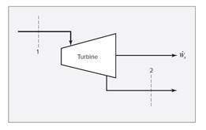
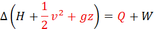
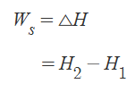
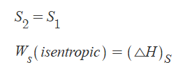
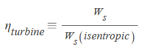
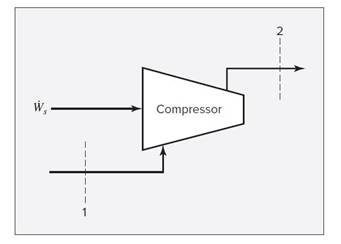
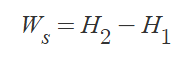
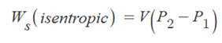
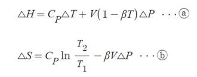

ch7.흐름 공정에의 열역학의 적용
1)터빈: 고온/고압의 유체가 가진 내부 에너지를 일로 변환하는 기기

이렇게 생겼는데 에너지 수지식을 적용가능하다.

터빈이 정상상태라서 위치 운동에너지 변화 없고, 단열되어 있으면

위 식이 성립한다. (터빈에서 항상 적용, 암기)
일반적으로 터빈 설계시 입구에서의 온도와 압력, 그리고 출구 압력은 주어지는 값이다.
가역 단열 조건의 터빈에서는 등엔트로피 공정이고, 이때 일은 엔탈피 차이와 같다.

여기에 실제로는 가역조건이 불가능하므로 효율이 존재한다.

적용법:
조건: 초기 P,T와 최종 P, 그리고 효율이 주어진다.
초기조건으로 초기 엔탈피와 엔트로피 구하기 -> 등엔트로피 공정이므로 S1=S2 이것과 압력으로 최종 조성 구할 수 있음 -> 최종엔탈피 구하기-> 초기 엔탈피-최종엔탈피 차이가 일 -> 필요에 따라 일에 효율을 곱해준다.
2)압축기
터빈과 완전히 반대로 동작하는 장치이다. 외부에서 축일을 받아 유체의 내부 에너지로 변환시켜준다. 이 내부 에너지의 변화는 속도나 압력의 변화로 나타나게 된다.

사용식은 터빈과 같다. 단 효율을 터빈의 경우 곱했다면 압축기의 경우 나눠줘야 한다.

적용법:
초기조건이 주어지므로, 그에 해당하는 엔탈피 엔트로피 찾기 ->동엔트로피 공정이므로 나중조건의 압력에서 동엔트로피를 형성하기 위한 조성을 찾음->조성으로 엔탈피 계산->엔탈피의 차이가 필요한 일 -> 효율로 실제 일 구함. 이걸로 실제 출구 엔탈피 계산 -> 실제 조성 구함 ->실제 엔트로피와 온도를 구한다.
3) 펌프
 
펌프의 경우 위 3식이 성립한다.